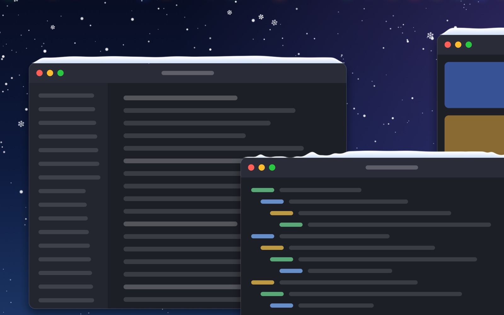
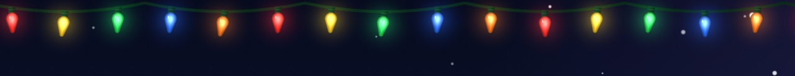
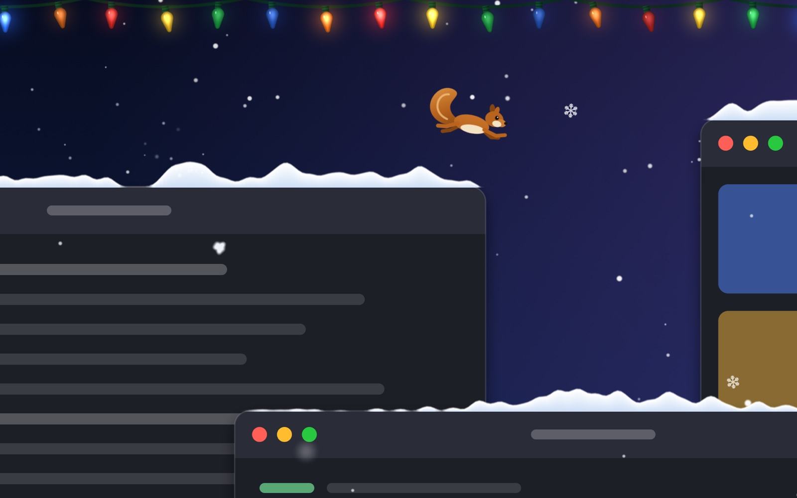
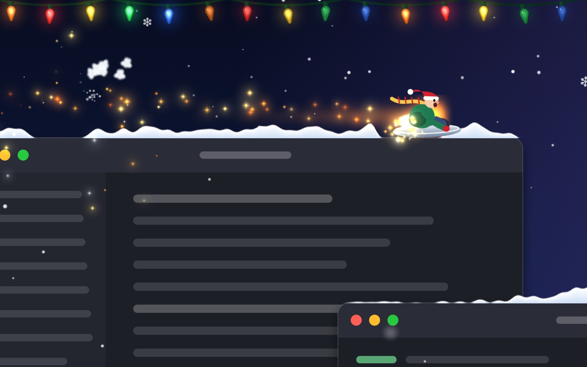
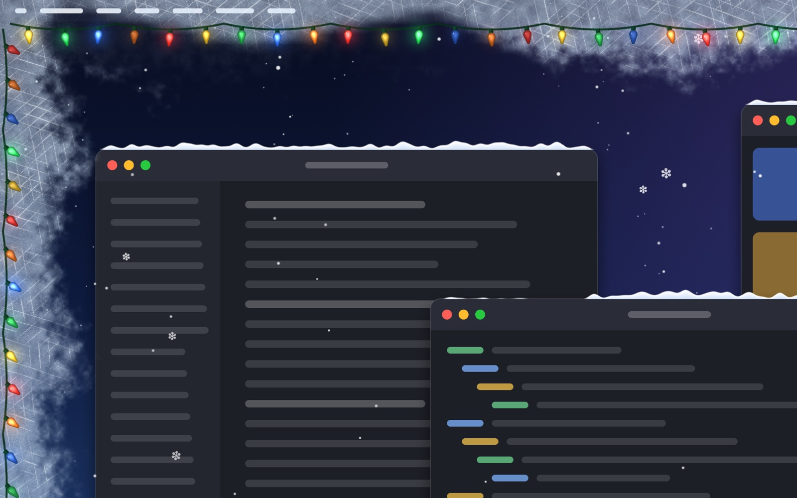
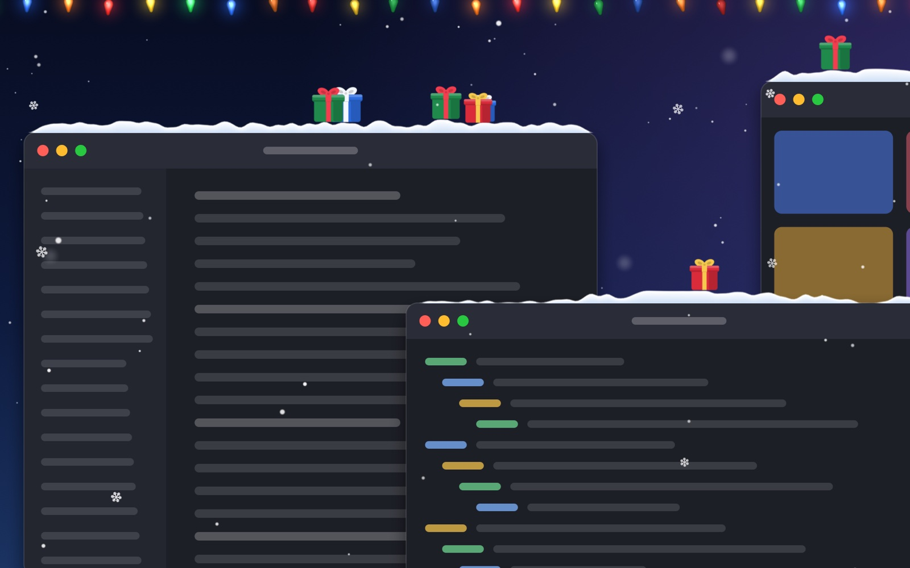
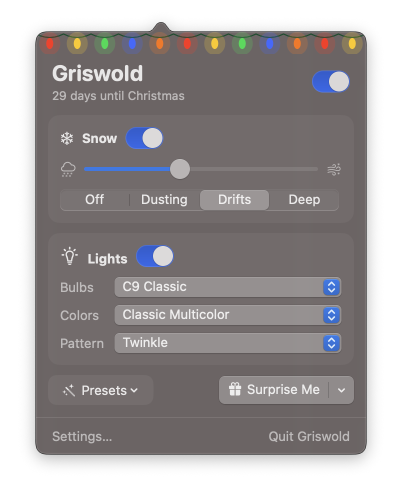
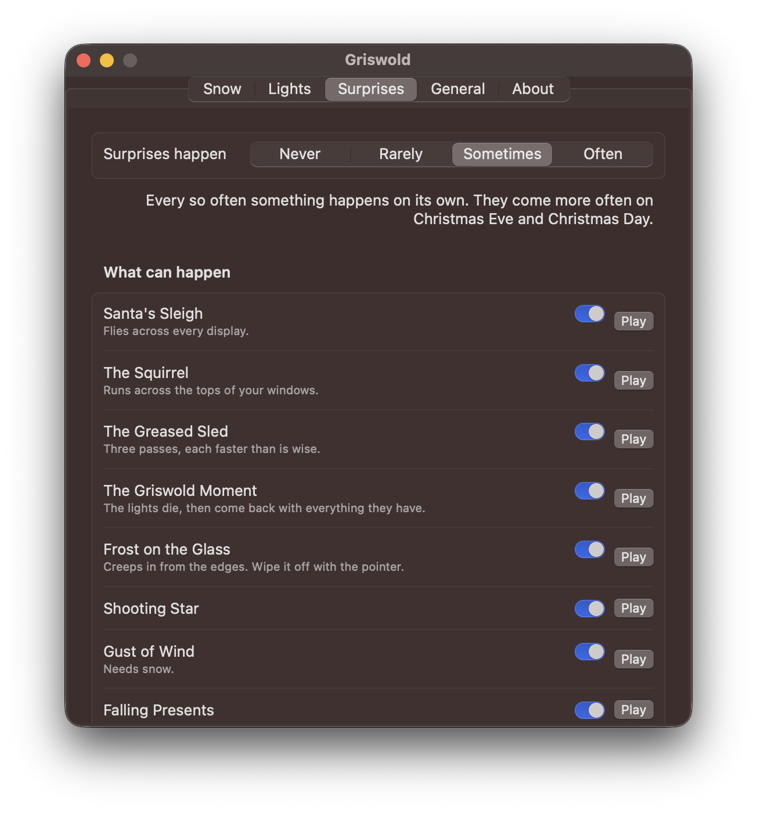

45 seconds, no sound. Drawn by the app on a stand-in desktop.
Snow
Snow falls over the desktop and piles up on top of your windows. Drag a window and the snow falls off. Close it and the pile drops onto whatever is underneath.
You choose where it falls: in front of your windows, behind them so it never covers what you are doing, or both. Wave the pointer through it and it swirls.


Lights
A string of lights around every screen. Five kinds of bulb, eleven sets of colors, ten patterns. Put them on whichever edges you like.


Surprises
Every few minutes something else happens. Each one has an off switch, and a Play button if you would rather not wait.






Also northern lights, shooting stars, a snowman, gusts of wind, a snowball to the glass, and fireworks at New Year.
The app
Griswold sits in the menu bar. Click the snowflake to change things or to switch it off.
- No permissions. It reads where your windows are and nothing else.
- Clicks go straight through it. It hides when an app goes full screen.
- Light on power. 30 frames a second on battery, and it stops drawing when the display sleeps or the screen locks.
- Signed and notarized. About 3 MB, for macOS 13 or later on Apple silicon and Intel.
- Open source. MIT licensed, on GitHub.

